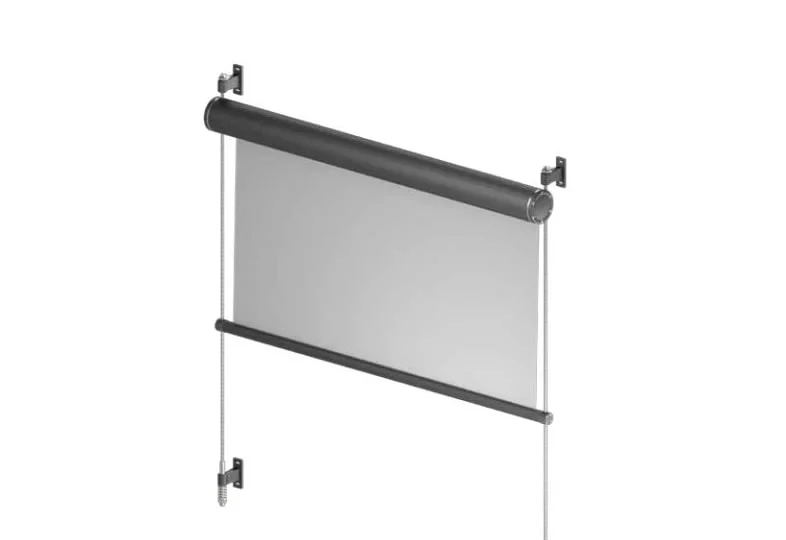

Refleksol 125 · okrugla kaseta
Okrugla kaseta u obliku cilindra montira se na pročelje na nosačima, malo odmaknuta od zida, pa i veliki sustavi izgledaju lagano. Čelične vodilice drže cijeli sustav i ujedno služe kao bočne vodilice. Više sustava može se složiti jedan iznad drugog do 8,5 m visine.
- IzvedbaOkrugla kaseta, čelične vodilice
- Maks. š × v3,5 × 4,25 m
- PogonElektrično
- PrimjenaVanjska